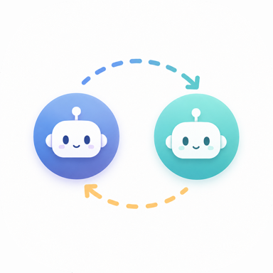
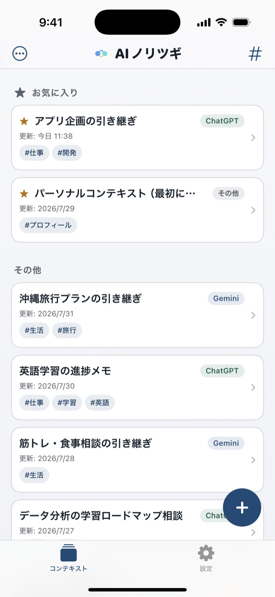
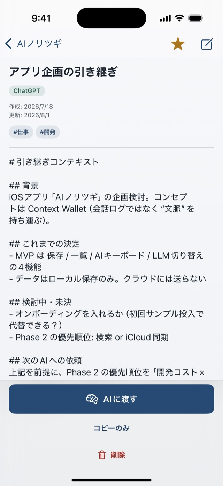

AIの引き継ぎメモ
AIを変えても、
思考は止めない。
ChatGPT で考えた続きを、Claude で。会話ログではなく前提だけを保存しておけば、コピーして渡すだけで、どのAIでも続きから話せます。アカウント不要・広告なしのコンテキスト管理アプリです。
App Store にて近日公開
iOS 18.0 以降 / iPhone 向け
文脈を、貯めて、渡す。
-

お気に入りとタグで、一覧に。
-

開いて、そのまま次のAIへ。
文脈を運ぶ、4つの道具
-
共有シートから保存
AIの回答でも自分のメモでも、テキストを選んで共有メニューから「AIノリツギ」を選ぶだけ。その場で引き継ぎ用の文脈になります。
-
タグと検索で整理
作成元のAI・更新日時・タグで一覧。お気に入りと検索で、必要な文脈をすぐ取り出せます。
-
次のAIへ渡す
渡したいAIを選ぶと、本文をコピーしてそのアプリを開きます。あとは入力欄に貼り付けるだけ。ChatGPT・Claude・Gemini などから選べます。
-
日本語入力もできる専用キーボード
保存した文脈を、他のアプリの入力欄へそのまま差し込めます。かな漢字変換・ライブ変換・片手キーボードを備え、ふだんの日本語入力にもそのまま使えます。
保存した文脈は JSON で書き出し・読み込みできます。機種変更やバックアップにも。
文脈は、あなたの端末の中に
本アプリは ChatGPT・Claude・Gemini などの API を呼び出しません。保存したテキストは端末内にとどまり、キーボードと共有拡張は外部と通信しません。改善のための匿名の利用状況の計測は、アプリ本体でのみ行います。詳細はプライバシーポリシーをご覧ください。
App Store にて近日公開予定。
よくあるご質問はサポートに掲載しています。お問い合わせ: tempuraapps.support@gmail.com